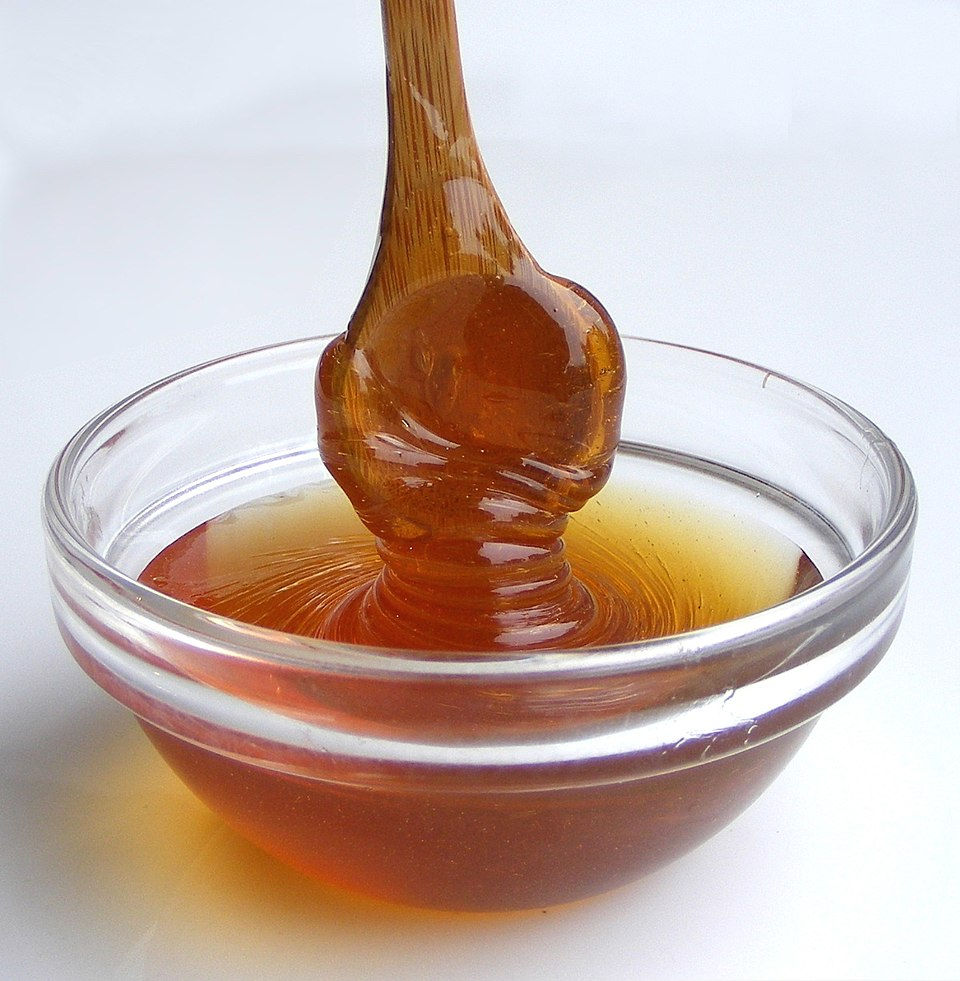

Syrup

Pengggg
- 2 cups pure maple syrup
- 1/2 cup water
- 1/4 teaspoon salt (optional)
- 1 teaspoon vanilla extract (optional)
- Pour the maple syrup and water into a medium saucepan.
- Bring to a gentle simmer over medium heat.
- Stir occasionally and let simmer for 5–10 minutes to slightly thicken.
- If desired, stir in salt and vanilla extract for extra flavor.
- Remove from heat and let cool slightly before serving.
- Serve warm over pancakes, waffles, or your favorite breakfast foods.
- Store leftover syrup in a sealed container in the refrigerator.
Home